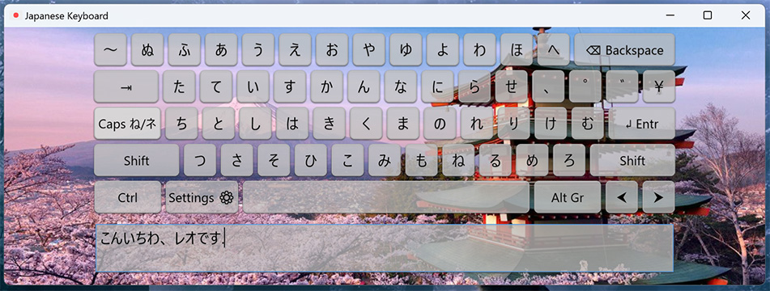

Mon WebPortrait


Mon WebPortrait
Léo
Hey👋! Enchanté je m'appelle Léo j'ai .
J'ai découvert la programmation au travers du développement Web pendant le 2e confinement, au fur et à mesure cela est alors devenu une passion pour moi.
C'est ainsi qu'en 2024, j'entre alors en 1ère année de BUT Informatique.
Mes Passions
Programmation
Depuis que j'ai commencé le Développement Web durant le 2e confinement (D'abord avec HTML et CSS, puis 2ans après avec JavaScript).
La programmation est devenue une passion pour moi, il peut m'arriver par exemple de coder ou de chercher pendant des heures une solution pour résoudre un bug.
De plus, depuis maintenant 1 an, j'ai débuté dans le développement d'applications (en C# avec WPF et Avalonia UI).
Musique
La musique me passionne depuis l'enfance.
Dès mon plus jeune âge, j'étais attiré par tout ce qui touche à la musique, tel que l'installation (matériel sonore) ou bien la musique en général (app Virtual DJ) lors des soirées familiales.
J'ai commencé à jouer du synthétiseur en 6ème, ce qui m'a apporté des connaissances en théorie musicale (solfège).
J'apprécie la plupart des genres musicaux, mais mon genre préféré reste l'Electro (Notamment les styles EDM, Future Rave, House, Techno et French Touch).
Intelligences multiples
+ Logique
"Depuis mon plus jeune âge, j'ai toujours eu plus ou moins de facilité en mathématiques et la capacité de parfois trouver une logique dans quelque chose que certaines personnes ne pourraient pas trouver."
+ Spacial
"Au travers de mon imagination et de ma mémoire visuelle, j'ai la possibilité, à n'importe quel endroit, d'imaginer un objet à cet endroit en particulier, comme une sorte de "VR". Lorsque je suis en voiture, par exemple, je m'amuse parfois à regarder le paysage et imaginer à quoi il pourrait ressembler dans le futur."
+ Musicale
"Étant musicien et passionné par la musique, j'ai une certaine musicalité et la capacité à trouver facilement des mélodies et des rythmes. Je possède également une grande aptitude à mémoriser des morceaux et à inventer spontanément des chansons ou des compositions dans ma tête, guidé par mon instinct créatif."
- Interpersonnel
"Etant timide et introverti, je ne me sens pas toujours à l'aise pour aller spontanément vers les autres ou prendre la parole devant un groupe. Cela peut rendre les interactions sociales plus difficiles pour moi, surtout dans des contextes où je suis exposé à plusieurs personnes en même temps."
Ma plus grande réussite
Ce Clavier Japonais est ma plus grande réussite
Développé après avoir rencontré des difficultés à installer celui de Windows par défaut.
Ce fut alors ma première application réalisée en C# avec WPF pour l'interface, un projet qui m'a aidé à maîtriser ce langage que je venais d’apprendre.
Malgré plusieurs bugs et contraintes, comme les restrictions de sécurité de Windows empêchant le transfert des saisies vers d'autres applications, j'ai persévéré. J'ai ainsi finalement publié l’application. Et j'y ai de plus ajouté de nouvelles fonctionnalité au cours du temps